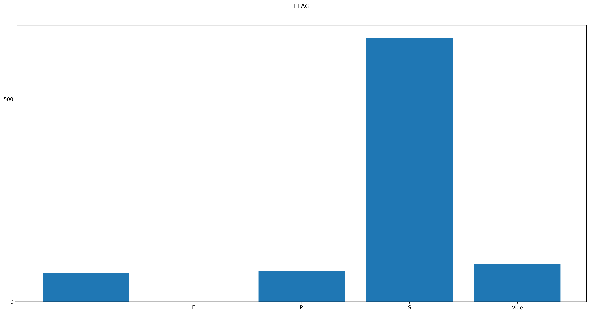

Voici deux graphique qui montre le nombre de fois qu'une addresse a envoyer des paquets


Voici deux graphique qui montre le nombre de fois qu'une addresse a recus des paquets

Voici un graphique qui permet le nombre de fois qu'a été
envoyer des paquets de différentes tailles

Voir les différents flag liés au protocol TCP
Flag{s}= n paquet TCP dont le drapeau S (S pour SYN) est activé signifie simplement qu'il s'agit d'une tentative de connexion. Ainsi, en les bloquant, votre pare-feu vous protège.
Flag{P}= Le but de la fonction push et de l'indicateur PUSH est de pousser les données de l'utilisateur émetteur vers l'utilisateur récepteur. Elle ne fournit pas de service d'enregistrement.
1er attaque : Attaque DDoS
Adresse de départ de l'attaquant : BpLinux
Puis après il crée un réseau de botnet
2 éme attaque : Hypothèse
- attaques de numéro de séquence ou de prédiction de séquence
- tentative de connexion d'une source mal intentionner
Quelle commande a permis d'obtenir ce fichier DumpFile ?
C'est la commande Tcpdump. Tcpdump est un utilitaire de ligne de commande qui vous permet de capturer et d’analyser le trafic réseau passant par votre système.
Il est capable de capturer et de décoder de nombreux protocoles différents, tels que TCP, UDP, ICMP et bien d’autres
Il est souvent utilisé pour aider à résoudre les problèmes de réseau, ainsi qu’un outil de sécurité.
Outil puissant et polyvalent comprenant de nombreuses options et plusieurs filtres, tcpdump peut être utilisé dans de nombreux cas. Comme il s’agit d’un outil en ligne de commande, il est idéal de l’exécuter sur des serveurs ou des périphériques distants pour lesquels aucune interface graphique n’est disponible, afin de collecter des données pouvant être analysées ultérieurement. Il peut également être lancé en arrière-plan ou sous forme d’une tâche planifié à l’aide d’un cron.
Qu'est ce qu'un DDOS
Une attaque par déni de service (DDoS) se produit lorsqu'un pirate informatique utilise une armée d'appareils infectés par des malwares pour lancer une attaque coordonnée sur un site web, un serveur ou un réseau. Lorsque vous apprenez qu'un site web a été rendu inaccessible par des pirates informatiques, il y a de fortes chances pour qu'ils aient utilisé une attaque DDoS. L'objectif d'une attaque DDoS est de submerger un site avec un trafic trop important ou de surcharger votre système avec un trop grand nombre de requêtes jusqu'à ce qu'un blocage se produise. Le pirate utilise pour cela un réseau de bots, c'est-à-dire un réseau d'appareils ou d'« ordinateurs zombies » qu'il a infectés avec des logiciels malveillants permettant de les contrôler à distance.